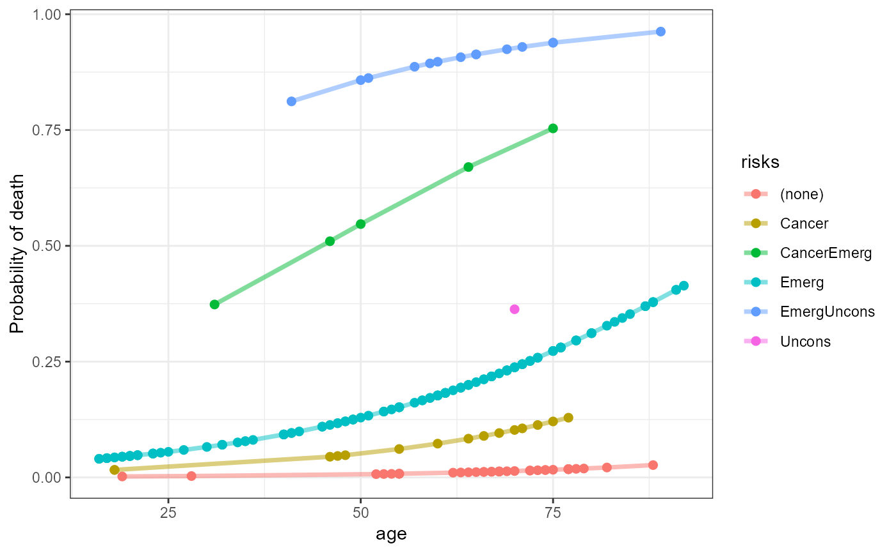

ICU data set
ICU.RdThe ICU data set consists of a sample of 200 subjects who were part of a much larger study on survival of patients following admission to an adult intensive care unit (ICU), derived from Hosmer, Lemeshow and Sturdivant (2013) and Friendly (2000).
The major goal of this study was to develop a logistic regression model to predict the probability of survival to hospital discharge of these patients and to study the risk factors associated with ICU mortality. The clinical details of the study are described in Lemeshow, Teres, Avrunin, and Pastides (1988).
This data set is often used to illustrate model selection methods for logistic regression.
Usage
data(ICU)Format
A data frame with 200 observations on the following 22 variables.
-
% \item{\code{id}}{Patient id code, a numeric vector}
diedDied before discharge?, a factor with levels
NoYesagePatient age, a numeric vector
sexPatient sex, a factor with levels
FemaleMaleracePatient race, a factor with levels
BlackOtherWhite. Also represented here aswhite.serviceService at ICU Admission, a factor with levels
MedicalSurgicalcancerCancer part of present problem?, a factor with levels
NoYesrenalHistory of chronic renal failure?, a factor with levels
NoYesinfectInfection probable at ICU admission?, a factor with levels
NoYescprPatient received CPR prior to ICU admission?, a factor with levels
NoYessystolicSystolic blood pressure at admission (mm Hg), a numeric vector
hrtrateHeart rate at ICU Admission (beats/min), a numeric vector
previcuPrevious admission to an ICU within 6 Months?, a factor with levels
NoYesadmitType of admission, a factor with levels
ElectiveEmergencyfractureAdmission with a long bone, multiple, neck, single area, or hip fracture? a factor with levels
NoYespo2PO2 from initial blood gases, a factor with levels
>60<=60phpH from initial blood gases, a factor with levels
>=7.25<7.25pcoPCO2 from initial blood gases, a factor with levels
<=45>45bicBicarbonate (HCO3) level from initial blood gases, a factor with levels
>=18<18creatinCreatinine, from initial blood gases, a factor with levels
<=2>2comaLevel of unconsciousness at admission to ICU, a factor with levels
NoneStuporComawhitea recoding of
race, a factor with levelsWhiteNon-whiteunconsa recoding of
comaa factor with levelsNoYes
Details
Patient ID numbers are the rownames of the data frame.
Note that the last two variables white and uncons are a recoding of
respectively race and coma to binary variables.
Source
M. Friendly (2000), Visualizing Categorical Data, Appendix B.4. SAS Institute, Cary, NC.
Hosmer, D. W. Jr., Lemeshow, S. and Sturdivant, R. X. (2013) Applied Logistic Regression, NY: Wiley, Third Edition.
References
Lemeshow, S., Teres, D., Avrunin, J. S., Pastides, H. (1988). Predicting the Outcome of Intensive Care Unit Patients. Journal of the American Statistical Association, 83, 348-356.
Examples
data(ICU)
# remove redundant variables (race, coma)
ICU1 <- ICU[,-c(4,20)]
# fit full model
icu.full <- glm(died ~ ., data=ICU1, family=binomial)
summary(icu.full)
#>
#> Call:
#> glm(formula = died ~ ., family = binomial, data = ICU1)
#>
#> Deviance Residuals:
#> Min 1Q Median 3Q Max
#> -1.80396 -0.56064 -0.20440 -0.08635 2.97729
#>
#> Coefficients:
#> Estimate Std. Error z value Pr(>|z|)
#> (Intercept) -6.726704 2.385512 -2.820 0.00481 **
#> age 0.056393 0.018624 3.028 0.00246 **
#> sexMale 0.639725 0.531393 1.204 0.22864
#> serviceSurgical -0.673522 0.601902 -1.119 0.26315
#> cancerYes 3.107051 1.045846 2.971 0.00297 **
#> renalYes -0.035708 0.801647 -0.045 0.96447
#> infectYes -0.204933 0.553191 -0.370 0.71104
#> cprYes 1.053483 1.006614 1.047 0.29530
#> systolic -0.015472 0.008497 -1.821 0.06864 .
#> hrtrate -0.002769 0.009607 -0.288 0.77317
#> previcuYes 1.131942 0.671450 1.686 0.09183 .
#> admitEmergency 3.079583 1.081584 2.847 0.00441 **
#> fractureYes 1.411402 1.029705 1.371 0.17047
#> po2<=60 0.073822 0.857044 0.086 0.93136
#> ph<7.25 2.354078 1.208804 1.947 0.05148 .
#> pco>45 -3.018442 1.253448 -2.408 0.01604 *
#> bic<18 -0.709284 0.909777 -0.780 0.43561
#> creatin>2 0.295143 1.116925 0.264 0.79159
#> whiteNon-white 0.565729 0.926828 0.610 0.54160
#> unconsYes 5.232292 1.226303 4.267 1.98e-05 ***
#> ---
#> Signif. codes: 0 '***' 0.001 '**' 0.01 '*' 0.05 '.' 0.1 ' ' 1
#>
#> (Dispersion parameter for binomial family taken to be 1)
#>
#> Null deviance: 200.16 on 199 degrees of freedom
#> Residual deviance: 120.78 on 180 degrees of freedom
#> AIC: 160.78
#>
#> Number of Fisher Scoring iterations: 6
#>
# simpler model (found from a "best" subsets procedure)
icu.mod1 <- glm(died ~ age + sex + cancer + systolic + admit + uncons,
data=ICU1,
family=binomial)
summary(icu.mod1)
#>
#> Call:
#> glm(formula = died ~ age + sex + cancer + systolic + admit +
#> uncons, family = binomial, data = ICU1)
#>
#> Deviance Residuals:
#> Min 1Q Median 3Q Max
#> -2.6490 -0.5822 -0.3426 -0.1222 2.5231
#>
#> Coefficients:
#> Estimate Std. Error z value Pr(>|z|)
#> (Intercept) -5.884702 1.758997 -3.345 0.000821 ***
#> age 0.038875 0.013130 2.961 0.003069 **
#> sexMale 0.524194 0.479374 1.093 0.274176
#> cancerYes 2.386534 0.896958 2.661 0.007798 **
#> systolic -0.011683 0.006833 -1.710 0.087309 .
#> admitEmergency 3.171332 0.962323 3.295 0.000982 ***
#> unconsYes 3.934575 0.961746 4.091 4.29e-05 ***
#> ---
#> Signif. codes: 0 '***' 0.001 '**' 0.01 '*' 0.05 '.' 0.1 ' ' 1
#>
#> (Dispersion parameter for binomial family taken to be 1)
#>
#> Null deviance: 200.16 on 199 degrees of freedom
#> Residual deviance: 134.38 on 193 degrees of freedom
#> AIC: 148.38
#>
#> Number of Fisher Scoring iterations: 6
#>
# even simpler model
icu.mod2 <- glm(died ~ age + cancer + admit + uncons,
data=ICU1,
family=binomial)
summary(icu.mod2)
#>
#> Call:
#> glm(formula = died ~ age + cancer + admit + uncons, family = binomial,
#> data = ICU1)
#>
#> Deviance Residuals:
#> Min 1Q Median 3Q Max
#> -2.5631 -0.6241 -0.3253 -0.1487 2.4928
#>
#> Coefficients:
#> Estimate Std. Error z value Pr(>|z|)
#> (Intercept) -6.86978 1.31882 -5.209 1.90e-07 ***
#> age 0.03718 0.01277 2.911 0.003600 **
#> cancerYes 2.09711 0.83847 2.501 0.012381 *
#> admitEmergency 3.10218 0.91860 3.377 0.000733 ***
#> unconsYes 3.70546 0.87647 4.228 2.36e-05 ***
#> ---
#> Signif. codes: 0 '***' 0.001 '**' 0.01 '*' 0.05 '.' 0.1 ' ' 1
#>
#> (Dispersion parameter for binomial family taken to be 1)
#>
#> Null deviance: 200.16 on 199 degrees of freedom
#> Residual deviance: 139.13 on 195 degrees of freedom
#> AIC: 149.13
#>
#> Number of Fisher Scoring iterations: 6
#>
anova(icu.mod2, icu.mod1, icu.full, test="Chisq")
#> Analysis of Deviance Table
#>
#> Model 1: died ~ age + cancer + admit + uncons
#> Model 2: died ~ age + sex + cancer + systolic + admit + uncons
#> Model 3: died ~ age + sex + service + cancer + renal + infect + cpr +
#> systolic + hrtrate + previcu + admit + fracture + po2 + ph +
#> pco + bic + creatin + white + uncons
#> Resid. Df Resid. Dev Df Deviance Pr(>Chi)
#> 1 195 139.13
#> 2 193 134.38 2 4.7582 0.09263 .
#> 3 180 120.78 13 13.5981 0.40274
#> ---
#> Signif. codes: 0 '***' 0.001 '**' 0.01 '*' 0.05 '.' 0.1 ' ' 1
## Reproduce Fig 6.12 from VCD
icu.fit <- data.frame(ICU, prob=predict(icu.mod2, type="response"))
# combine categorical risk factors to a single string
risks <- ICU[, c("cancer", "admit", "uncons")]
risks[,1] <- ifelse(risks[,1]=="Yes", "Cancer", "")
risks[,2] <- ifelse(risks[,2]=="Emergency", "Emerg", "")
risks[,3] <- ifelse(risks[,3]=="Yes", "Uncons", "")
risks <- apply(risks, 1, paste, collapse="")
risks[risks==""] <- "(none)"
icu.fit$risks <- risks
library(ggplot2)
ggplot(icu.fit, aes(x=age, y=prob, color=risks)) +
geom_point(size=2) +
geom_line(size=1.25, alpha=0.5) +
theme_bw() + ylab("Probability of death")
